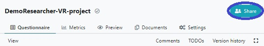
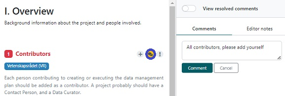

How to share and collaborate on a project
There might be situations where you want others to have access to your project:
- Collaborators in the project needs to answer some questions
- You want a stakeholder, such as the NBIS data steward or a SNIC center, to be
able to view the answers
Start by clicking on
Share in the top right corner of the navigation bar.

There are three ways to open up the project for sharing, by adding specific users, by enabiling
the visiblity, or by activating a public link.
Add users
Click in the field
Add users and start typing the name of the person you
want to share with (requires an account at the DS Wizard). Select this user from the resulting
list of names, and then select the role you want this person to have (Viewer, Commenter, Editor, Owner).
Visibility
If you want to share the project with all who has an account in DS Wizard, you can change the visibility
of the project (default is that a project is only visible to you and users you have added).
Activate the
Visible by all other logged-in users and select if you want them to
view,
comment or
edit.
Public link
If you want to share the project with people who doesn't have an account in DS Wizard,
you can make a public link instead of adding users.
Activate the
Public link and select if you want the person(s) with the link to
view,
comment or
edit. Now you can copy the link in the address bar and share with whomever
you want, without them having to log in.
Click on
Save.
Add comment
It is possible to add comments by clicking on the bubble icon next to a question,
adding a comment and then click on the
Comment button.

As in other tools, where adding comments are possible, one can reply, mark as solved, or
delete.